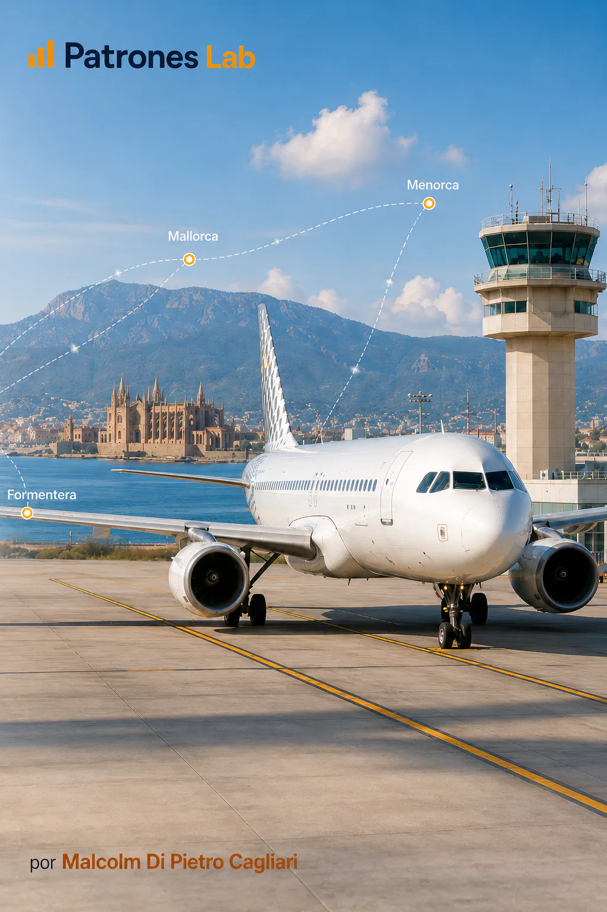

АНАЛИТИКА ДАННЫХ · ПРОЕКТ 03

Проект 01 · Аналитика данных
Анализ полетов на Балеарских островах
Анализ воздушного движения в Испании на основе общедоступных данных AENA с упором на объемы, закономерности по аэропортам и различия между категориями.
КОНТЕКСТ И ЦЕЛЬ
Узнайте, как распределяется воздушное движение на Балеарских островах в зависимости от аэропорта, объема и типа трафика.
ДАННЫЕ И ДИАГНОСТИКА
- Использование общедоступных данных AENA в качестве основного источника.
- Сравнение аэропортов, категорий и вариантов трафика.
- Построение визуалов для преобразования оперативных данных в территориальное считывание.
РЕЗУЛЬТАТЫ И ВЫВОДЫ
Проект представлен как воспроизводимый анализ на GitHub и как авторская публикация в LinkedIn. Визуальное повествование помогает раскрыть закономерности и их контекст.